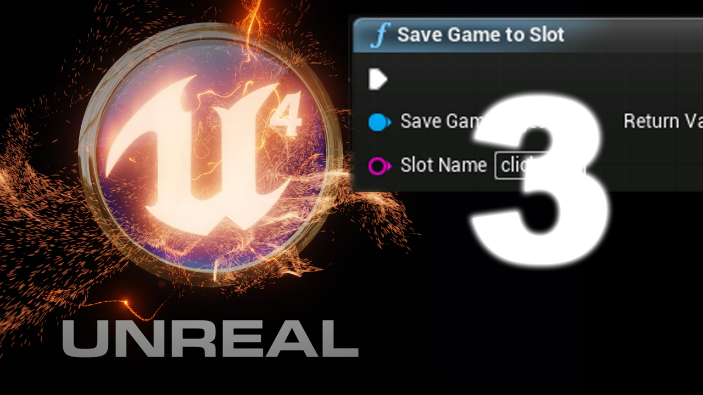

Save & Load game data - video
Save & Load game data
Simple video to demonstrate the process of saving and loading game data in bluprints using the SaveGame class.
<youtube> https://www.youtube.com/watch?v=6l7uynUwm5M

Simple video to demonstrate the process of saving and loading game data in bluprints using the SaveGame class.
<youtube> https://www.youtube.com/watch?v=6l7uynUwm5M